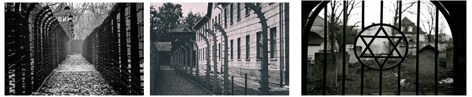
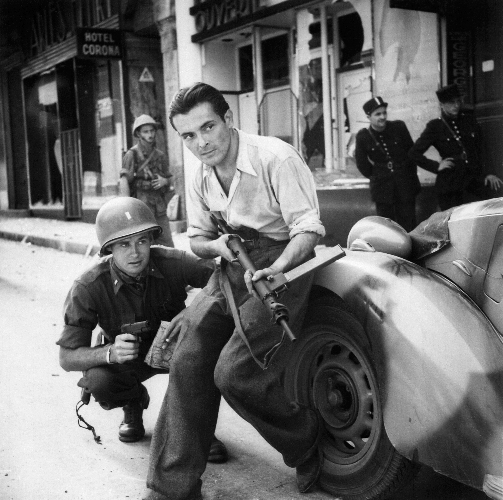
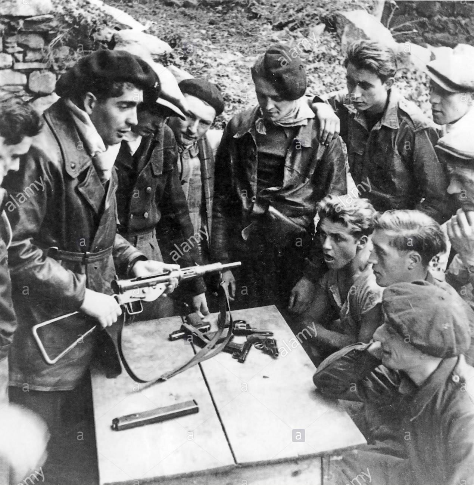

Durante la ocupación, el mariscal Pétain acepta las condiciones impuestas por Hitler y ofrece su colaboración. Los alemanes confiscan las cosechas, las máquinas y las materias primas sin tener en cuenta las necesidades de los franceses. Los jóvenes deben trabajar para Alemania y para la guerra. Las industrias también están al servicio de Alemania. Los franceses están en una situación difícil porque la comida escasea y está racionada. Un mercado negro se pone en funcionamiento para encontrar comida.
Los franceses deben respetar la política antisemita impuesta por el tercer Reich. Todos los judíos deben llevar una estrella amarilla para ser identificados, y son llevados a campos de concentración.
Los judíos están obligados a trabajar, es lo que se conoce como trabajo forzado. Se exterminan a los judíos más débiles tanto en Alemania como en el resto de países ocupados, entre 1941 y 1942.

 Tras la llamada a la resistencia del General De Gaulle, las fuerzas se van a movilizar. Grupos de resistentes se van a organizar en los bosques para frenar las tropas alemanas. Destruyen puentes, vías de ferrocarriles y organizan emboscadas a los soldados alemanes. La Resistencia francesa recibe la ayuda de los guerrilleros españoles (alrededor de 60 000), antiguos republicanos que huyeron a Francia durante la Guerra Civil y que siguen luchando contra Franco. Otros lucharon contra las fuerzas del Eje, uniéndose a las fuerzas francesas libras o en la legión extranjera.
Cuando las tropas alemanas ocupan la zona libre en Francia en noviembre de 1942, los Resistentes son perseguidos por la Gestapo (la policía secreta de la Alemania nazi) ya que daban información a los aliados, atacaban trenes, camiones y otros transportes que pertenecían a los alemanes, y cometían sabotajes. Algunos eran torturados y luego fusilados.